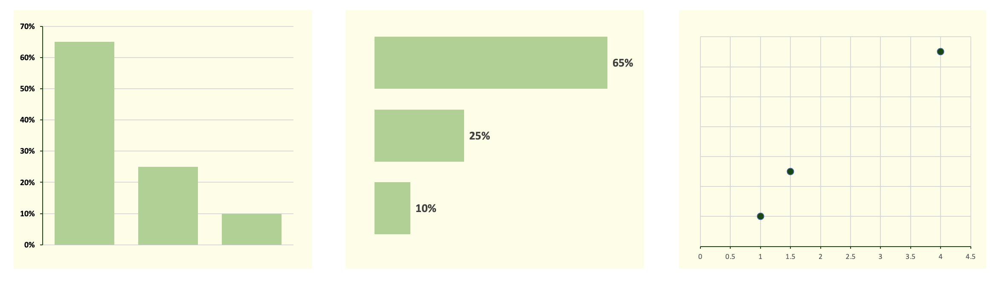
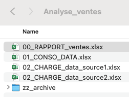

On the art of analyzing data in Excel — or anywhere else
This is a series of articles about analyzing data in Excel. Their goal is not to be exhaustive and walk you through every Excel feature — hundreds of books already do that — nor to turn you into a data hero. The modest ambition of these few lines is to arm you with the bare essentials for tackling simple data projects, and to cover the concepts shared by every data analysis project: from organizing the data to analyzing it with a tool everyone already owns, Excel, with one purpose — answering a question you are asking yourself.

You don't need a lot of data or tools. You need to answer a question
Sticking to answering a question is essential, because it is easy to get carried away by a dataset and the latest fashionable technology. A question may sharpen, or even grow, over the course of an analysis — but at the start of the whole exploration, a problem to solve, however fuzzy, is the bare minimum. Sometimes that question can even be reduced to a single hypothesis.
I once explored a dataset of cars and studied the number of cars of each color. Then I built a distribution chart by color. Green cars were the most numerous. Utterly pointless. If, instead, I had postulated that white cars should dominate because they sell best in France, the analysis would have been much more interesting. The answer, instead of being as dull as possible, would have become surprising — and therefore worth investigating.
To answer a question, you should use the minimum data necessary. No need to chase hundreds of millions of data points if a hundred are enough to answer your question.
Say you manage a municipal swimming pool, and your manager asks you to help forecast attendance peaks. It will probably not take you long to find an ideal culprit: the outside temperature. The hotter it gets, the more people show up at the pool. Proud of your revolutionary hypothesis, you head to the cash register and pull the ticket sales data for the past four years. You run a small linear regression to get a curve linking attendance to outside temperatures. Bingo! Your curve predicts attendance peaks with 93 % accuracy. You only needed 365 x 4 rows + 1 (for the leap year) to solve your problem.
The question now becomes: is this enough, or do you need to keep going? Your manager may be satisfied. Or perhaps disappointed. He did not need you to know that most attendance peaks happen on very hot days. Still, someone had to prove it. Perhaps that 93 % is not good enough and you need to investigate what lies behind the remaining gaps. And four years of cash-register data may no longer be enough to answer your questions.
This little example shows the very down-to-earth problems hiding behind big words like data or machine learning (linear regression is, after all, a basic machine learning technique). These words are collections of concepts that are more or less well defined — rather less than more, actually. The reality behind it all is usually far less esoteric. And if all you need is a piece of paper and a pencil to solve your problem, then by all means use them.
Why Excel?
We might question whether Excel is still relevant today. You have certainly heard about tools such as Looker Studio, Tableau or, staying within Microsoft, Power BI. And the marketing teams behind these tools have done an excellent job of pushing Excel into the background. But that would be forgetting that these tools occupy a different place on the data chessboard.
Every piece of software or programming language is just a tool, suited to certain situations. Looker/Data Studio, for instance, is built on Google Analytics, itself built on website traffic data — so it is a tool designed around analyzing that. Power BI has clear advantages for sharing the visuals you produce, but setting it up remains heavy. Python is a fine language for math and analytical models, but for everything else I prefer working with Javascript and its quirks.
Projects involving relational databases and/or analytics with a tool like Looker or Power BI are heavier to set up. Excel is faster and more flexible, and gives you a transversal view of every step of an analysis or reporting project. Ancestors of Excel have existed since the 1960s; the spreadsheet format feels natural to us. That was true 50 years ago, and it will likely still be true in 50 years.
Excel's strengths
- Excel is available everywhere; everyone knows it and knows how to use it, for better or for worse.
- An Excel project is quick to set up. Some problems do not require astronomical amounts of data to be solved, and a quick analysis in Excel is often enough.
- Excel covers the whole data spectrum: storage, organization, analytics (descriptive, diagnostic, predictive, prescriptive) and visualization. It also lets us manipulate each of these elements directly.
- Its tools are generally more flexible, particularly for visualization.
- With hundreds of millions of users behind it, Excel keeps evolving and integrating ever more tools (Power Query, and now Python right inside the workbook).
Excel's weaknesses
- You cannot work with large data volumes if you confine yourself to an Excel file for storage. That limitation disappears once you connect to an external data source.
- Automating and refreshing reports and visuals requires careful setup — read: it is easy to break an Excel report during an update.
- File sharing and protection features are clunky add-ons; tools like Power BI are often better suited for sharing reports with outside parties.
In short, Excel lets you see every element of data processing in a single piece of software: storage, organization, analytics and visualization. There is very little abstraction in Excel, which makes it an interesting tool for beginners — and sometimes for going further too.
Data with data, analysis with analysis
When a project outgrows a single worksheet, it becomes very important to start organizing your tabs or files and clearly separating the purpose of each part. It is a bit like cooking. If you are alone, you can eat in your kitchen or on your couch — it does not matter. If you have guests, you will peel the vegetables in the kitchen and serve the dishes in the living room. Not the other way around. And if you have to cater a banquet for 100 people, you will need a team and a well-oiled organization. Data analysis is exactly the same.
A place for everything and everything in its place.
More generally, we could speak of separation of concerns. Although the concept comes from programming, it fits what we are describing here well. It would suit many other fields too — architecture, cooking, politics (and the separation of powers) and plenty more. Everything has its place.
In data work, it is important to clearly separate the data, its analysis and its presentation, and to make clear — to yourself and to your stakeholders — which tab or file does what. The bigger the project, the truer this is. Mixing analysis and data exposes you, among other things, to maintenance problems with your files. In fact, I would say that someone who is clearly aware of the difference between an analysis table and a data table already possesses a respectable level of data literacy.
Naming your folders, files and tabs consistently
Separation of concerns is all well and good — but let's see how it plays out in practice, and give names to our folders, files and tabs of all kinds.
Here are some of the naming elements we can use:
- A prefix: I use ASCII alphabetical order to sort the elements of a folder. Files prefixed with "00" will sit at the top of the file listing. I reserve "zz" for archive files, which end up sorted last.
- The project or analysis name: when there are several analyses or projects. When a file mixes several projects together, we identify them. A typical example is a financial reporting file with a "Revenue" report and an "Inventory" report.
- The purpose of the file: "DATA" for data storage, "ANALYSIS" for... analysis and charts, "CONSO" for data consolidation, "CLEAN" for cleaning.
- The date (Year_Month_Day): a classic among classics, dating your files. No explanation needed, except that the "YYYY_MM_DD" format is wiser because it sorts same-named files chronologically. If the day comes first, files get sorted by... day of the month first, then month and year.
- The version: an alternative to dating files is using file versions — "V1", "version_2",...
You can of course mix these elements as you wish and even — let's go wild — invent your own. Now for a few examples.
For a financial reporting file, we can use a sorting prefix followed by a purpose label and the date. A folder might gather the following files:
- "00_DATA_Finance_2023_03_01"
- "01_REPORT_Finance_2023_05_01"
- "zz_DATA_Financial_report_2023_01_01"
- "zz_DATA_Financial_report_2023_02_01"
- "zz_DATA_Financial_report_draft_2023_01_01"
For a simple analysis with data and analysis in the same file, we would probably not need the date, nor a prefix to order the tabs — giving us an everyday file with one "DATA" tab and one "ANALYSIS" tab.
Finally, here is a real example of a sales reporting file structure:

When I open the folder, I immediately see the important file at the top; most colleagues will only ever open the "00_RAPPORT_ventes" file anyway. The two "02" files load data from two different sources with Power Query. Then, still with Power Query, I tap into those two files to consolidate and transform the data into the "01_CONSO" file, and the "00_RAPPORT" file taps into that one to feed itself with data.
← All articles